* Equal contribution ✉ Corresponding author: soumiks@iastate.edu
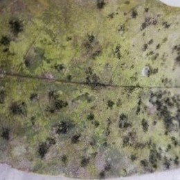
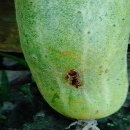
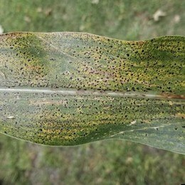
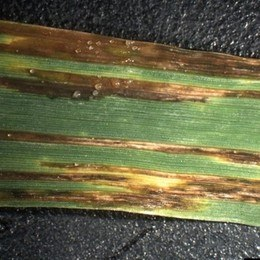
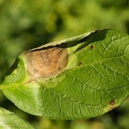
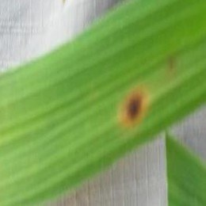
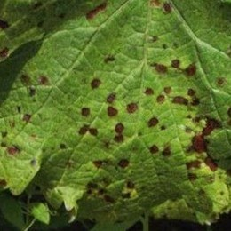
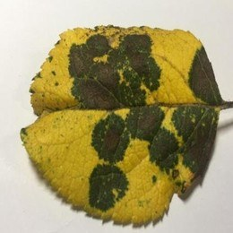
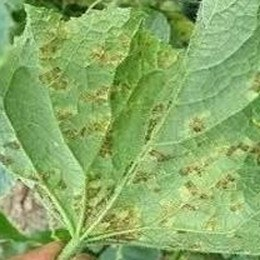
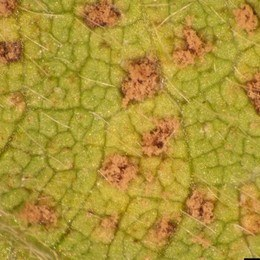
Crop disease diagnosis is critical for food security, yet labeled disease images are limited and models trained on curated images generalize poorly to field images. We showed in AgEval that general-purpose vision-language models (VLMs) adapt to plant stress tasks from a few annotated examples, and we gave frozen VLMs source-grounded symptom knowledge for 335 crops in SAGE. Building on both studies, we introduce MACE (Memory-Augmented Crop-Disease Evaluation), a training-free method that adds a caption memory to SAGE. Each labeled reference image is described once as text, and the four most relevant labeled captions are retrieved for each test image. We evaluate MACE against label lookup on ten crops and 1,600 queries, with near-copies removed and one image collection held out per crop. With four memory images per disease, MACE reaches 62.2% accuracy in distribution and 57.0% on held-out collections, compared with 42.8% and 50.7% for SAGE (+19.4 and +6.3 points) and 52.5% and 38.2% for nearest-neighbor label lookup with DINOv2. MACE corrects SAGE on 22.6% of in-distribution queries and errs where SAGE is correct on 3.2%. The retrieved labels account for most of the gain, and a post hoc test on all queries shows that caption text adds 6.4 points in distribution. MACE falls below SAGE when the true disease is not retrieved. MACE adds $0.0014 per query over SAGE and, at about one fifth of the price, reaches higher accuracy than an agent reading the same captions.
In AgEval, we showed that general-purpose VLMs adapt to plant stress tasks from a few annotated examples. In SAGE, we gave frozen VLMs source-grounded symptom knowledge for 335 crops.
MACE describes each labeled reference image once as a label-free caption. For each test image, the four most similar captions are retrieved with their labels and added to the SAGE knowledge. The VLM is not trained.
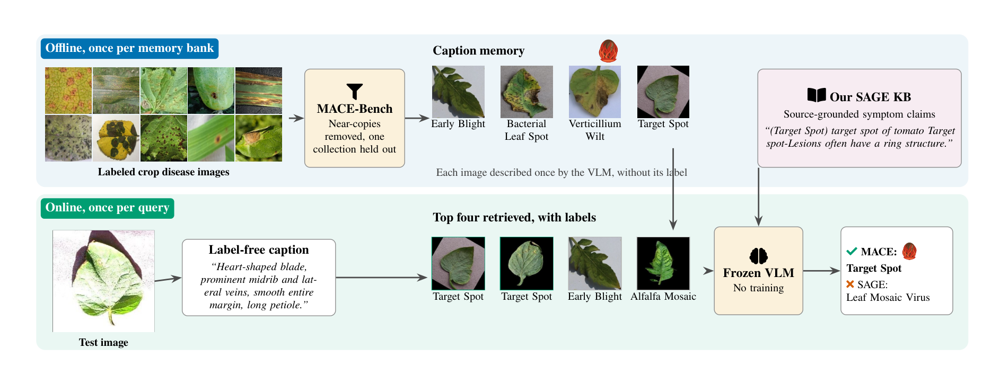
MACE on a recorded query, from offline caption memory to online retrieval and diagnosis.
The held-out gain is smaller and varies by crop. On held-out collections, MACE is higher than SAGE on five crops, equal on one and lower on four. MACE is higher than DINOv2 lookup on all ten held-out collections.
Accuracy (%) on 400 ablation queries, in distribution. On those queries, labels only did not differ from MACE. A post hoc test on all queries shows that caption text adds 6.4 points in distribution; the held-out difference is inconclusive.
When the true disease is not retrieved, MACE falls below SAGE: 16.0% against 23.1% in distribution, and 24.4% against 33.1% on held-out collections.
Accuracy rises with memory size, from 53.5% to 65.5% in distribution between one and sixteen images per disease. Memory from the same collection still helps by +6.7 points, so shared acquisition conditions contribute.
On 200 matched queries, MACE adds 22.5 points over SAGE for $0.0014 more per query. Prices are list-price estimates in US dollars.
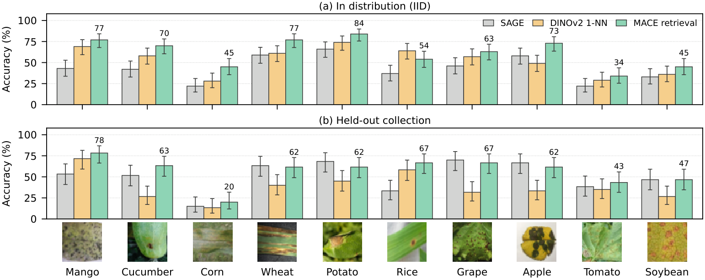
Accuracy per crop with four memory images per disease.
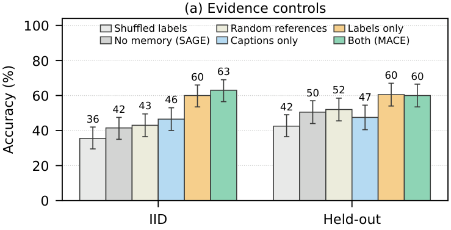
Which evidence matters? Planned controls, 400 queries.
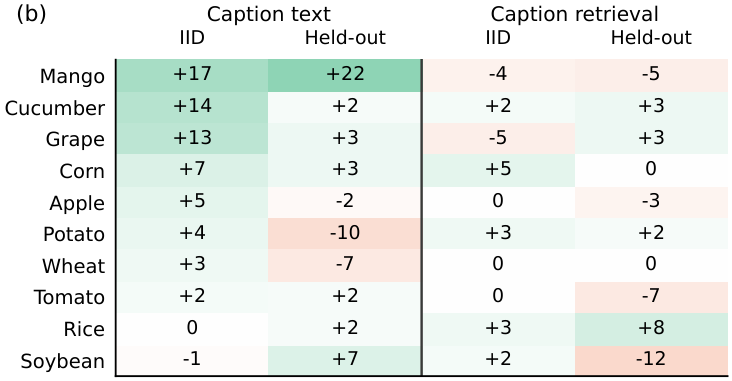
Where captions help, per crop, in points (post hoc).
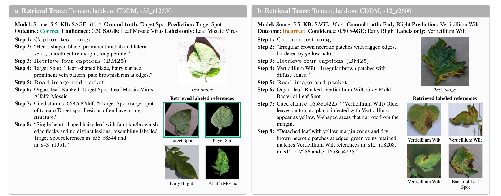
Recorded traces, one success and one failure, illustrative. Steps are fixed stages, not agent actions.
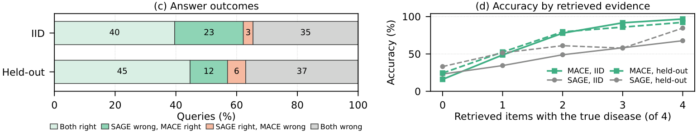
Answer outcomes and accuracy by retrieved evidence.
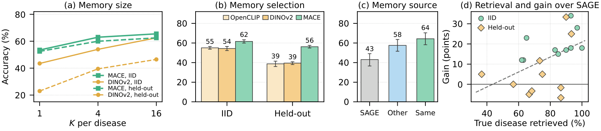
Robustness to memory size, selection and source.
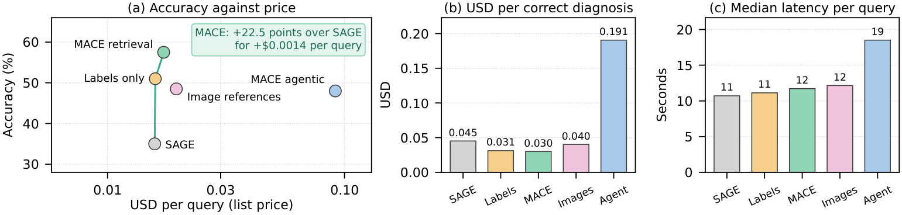
Accuracy and cost on 200 matched queries.
| Method | In distribution | Held-out | Macro, in distribution | Macro, held-out |
|---|---|---|---|---|
| No VLM call | ||||
| Label majority vote | 52.6 [49.6, 55.7] | 41.5 [37.8, 45.0] | 39.1 | 32.3 |
| Score-weighted vote | 55.7 [52.7, 58.7] | 44.5 [40.8, 48.2] | 45.0 | 35.8 |
| OpenCLIP 1-NN | 54.7 [51.7, 57.7] | 37.7 [34.0, 41.3] | 45.5 | 32.4 |
| DINOv2 1-NN | 52.5 [49.6, 55.5] | 38.2 [34.5, 42.0] | 41.6 | 32.0 |
| Frozen VLM | ||||
| SAGE (KB only) | 42.8 [39.8, 46.0] | 50.7 [46.8, 54.3] | 34.0 | 40.0 |
| MACE retrieval | 62.2 [59.3, 65.0] | 57.0 [53.2, 60.7] | 51.8 | 45.6 |
| Post hoc tests, frozen VLM | ||||
| Labels only | 55.8 [52.9, 58.8] | 54.8 [51.0, 58.7] | 47.3 | 42.5 |
| DINOv2-retrieved labels | 55.2 [52.2, 58.2] | 55.8 [51.8, 59.7] | 45.2 | 44.5 |
Equal-crop accuracy (%) with 95% bootstrap intervals, four memory images per disease. Macro: mean per-disease recall. Post hoc tests were added after the labels-only control was read.
MACE gains 24.8 and 11.8 points over SAGE on retrieval hits and loses 7.1 and 8.8 points on misses. Deployment would require a signal for retrieval failure, which we did not test.
Caption text added accuracy in distribution. DINOv2 retrieval matched caption retrieval in distribution, so captions were not required for retrieval there. Later work should separate the caption as an index from the caption as evidence.
@unpublished{roy2026mace,
title = {Memory-Augmented Crop-Disease Evaluation of Frozen Vision-Language Models},
author = {Roy, Tirtho and Ganguly, Shreyan and Arshad, Muhammad Arbab and Singh, Asheesh K. and
Ganapathysubramanian, Baskar and Hegde, Chinmay and Singh, Arti and Sarkar, Soumik},
note = {Manuscript in preparation},
year = {2026}
}